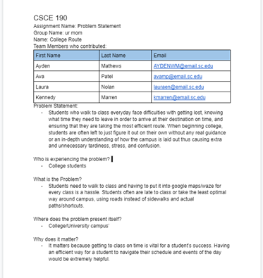
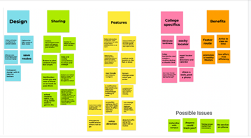
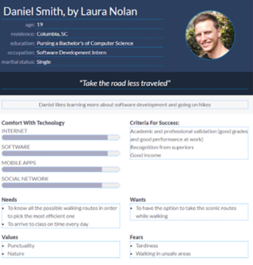
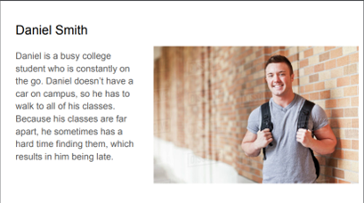
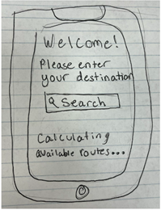
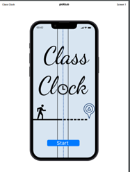

Problem Statement

Students who walk to class everyday face difficulties with getting lost, knowing what time they need to leave in order to arrive at their destination on time, and ensuring that they are taking the most efficient route. When beginning college, students are often left to just figure it out on their own without any real guidance or an in-depth understanding of how the campus is laid out thus causing extra and unnecessary tardiness, stress, and confusion.
Affinity Diagram

Our group got together to brainstorm ideas that would help make our app as helpful and successful as possible.
Persona: 5 personas for app

5 personas of students who would benefit from our app.
Storyboard: 5 storyboards of people using our app.

5 storyboards that show how different people can discover and benefit from our app.
Sketches

Rough ideas of what our application might look like.
Paper Prototype

Paper Prototype for our application.
Hi-Fi Prototype: Class Clock

A high fidelity prototype of our application.